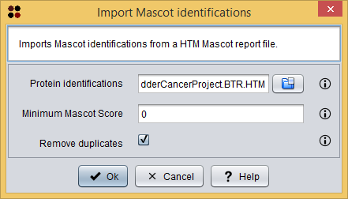

This operation allows you to import Mascot identifications from a HTM Mascot report file.
Usage
You can execute this operation by clicking the menu option Import/Import Mascot identifications.
A dialog will appear allowing you to choose the file containing the report and other parameters to filter the identifications to be loaded. As you can see in the following image, this dialog requires you to provide the following information:

Import Mascot identifications dialog
After clicking the Ok button, the imported Mascot identifications are added as a Mascot identifications datatype to the clipboard and automatically opened in the Mascot identifications table.